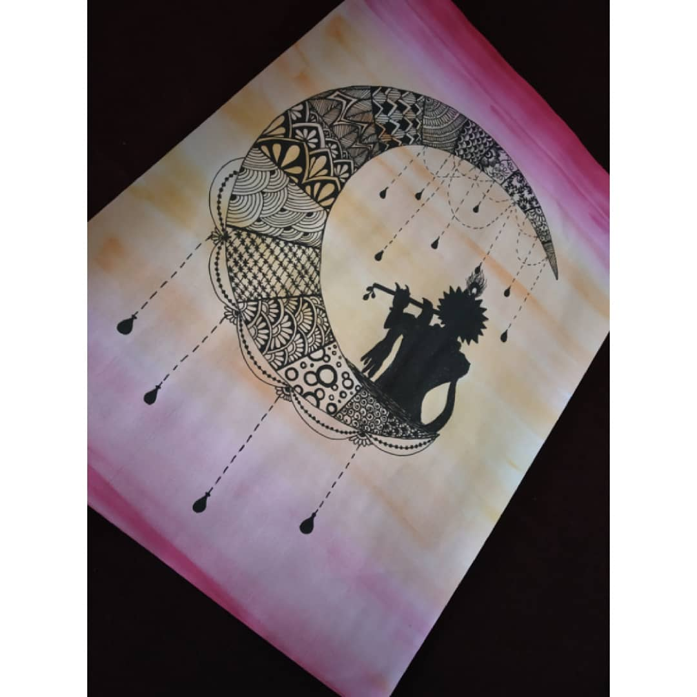

KRISHNA ON HALF MOON
In frame is another mandala art design which is basically depicting lord Krishna playing his flute on a half moon.
Here there is a little bit of temple effect given to the moon.
The background of the drawing has a wash of yellow and pink watercolour.
the wash is basically been given to get the temple type atmosphere effect more for the picture .
Lord Krishna was now born as a Kshatriya (or warrior caste) of the Yadava clan and his second name, Vasudeva, was explained away as a patronym .
Materials Required :
A4 size plain paper.
Pink and yellow water colour.
Black ink pain.
paint brush.
steps one can follow(if needed) :
First take a plain paper and dip the paint brush in water,
remove extra brush from water by wiping it on a piece of cloth.
Then dip the brush in pink colour and slowly give strokes from left
to right in the smae pattern which would give a effect
of dark shade on top to slowly lighter shade.
Then take some ochre yellow and start painting following the same pattern followed before in the middle of the page starting from end of light pibk on top to where it ends.
Let it dry well ,after its all dried up, take any black gel pain and draw the outline of the design.
After all that you can make any type of design pattern you like inside the outline.